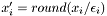

| AChannel_Hoffman97 | Voltage dependent ion channel from Hoffman et al., 1997 |
| AChannel_Korngreen02 | Voltage dependent ion channel from Korngreen et al. 2002 |
| ActiveCaChannel | Ion channel that contributes to the intracellular calcium concentration |
| ActiveChannel | Base Class for all active ionic channels using ion gates |
| Advancable | Base class for all objects to simulate |
| AhGate_Hoffman97 | Voltage dependent ion gate from Hoffman et al., 1997 |
| AHP_Channel | AHP model with constant activation gating function and constant step increase of the calcium concentration |
| AlGate_Korngreen02 | Voltage dependent ion gate from Korngreen et al. 2002 |
| Algorithm | The current algorithm interface is designed for offline-training only, i.e. all learning must occur externally. The algorithm object only "learns" through imported parameter vectors |
| AlphaSpikeFilter | Filter which simulates spikes with alpha functions |
| AmGate_Hoffman97 | Voltage dependent ion gate from Hoffman et al., 1997 |
| AnalogFeedbackNeuron | An object which outputs a predefined analog signal or an analog feedback from a readout or physical model |
| AnalogFilter | Base class of all analog filters |
| AnalogInputNeuron | An object which outputs a predefined analog signal |
| AnalogNeuron | Base class for all analog neurons |
| AnalogNeuron::Queue | Queue for delaying the output of analog synapses |
| AnalogSynapse | Base class of all analog synapses |
| AnalogTeacher | Teacher for a pool of analog neurons (all teached with the same signal) |
| AnGate_Korngreen02 | Voltage dependent ion gate from Korngreen et al. 2002 |
| ArmModel | Test class of physical model, for an arm. WITHOUT DELAY!! |
| bNACNeuron | Conductance based non-accomodating spiking neuron (with spike template) |
| bNACOUNeuron | Conductance based non-accomodating spiking neuron with Ornstein Uhlenbeck process noise |
| CaChannel_Yamada98 | Ca concentration dependent ion channel |
| cACNeuron | Conductance based accomodating spiking neuron (with spike template) |
| cACOUNeuron | Conductance based accomodating spiking neuron with Ornstein Uhlenbeck process noise |
| CaGate_Yamada98 | Ca concentration dependent ion gate |
| CALChannel_Destexhe98 | Voltage dependent ion channel from Destexhe et al. (1998) |
| CALhGate_Destexhe98 | Voltage dependent ion gate from Destexhe et al. (1998) |
| CALmGate_Destexhe98 | Voltage dependent ion gate from Destexhe et al. (1998) |
| CbHHOuINeuron | A single compartment neuron with an arbitrary number of channels, current supplying synapses and spike template |
| CbHHOuNeuron | A single compartment neuron with an arbitrary number of channels, current supplying synapses and spike template |
| CbNeuron | A single compartment neuron with an arbitrary number of channels, conductance based, as well as current based synapses |
| CbNeuronSt | A single compartment neuron with an arbitrary number of channels, coductance based as well as current based synapses and a spike template |
| CbStOuNeuron | A single compartment neuron with an arbitrary number of channels, coductance based as well as current based synapses, a spike template and Ornstein Uhlenbeck process noise |
| ConcIonGate | Generic first order kinitics ion concentration dependend ion gate |
| CountSpikeFilter | Filter which counts the spikes in a given time window |
| csimAnalogInputClass | Base class for all analog input channel receiving classes like AnalogInputNeuron or AnalogTeacher |
| csimClass | Base class of all classes in CSIM |
| csimClassInfo | Holds information about a class like name, description and field informations |
| csimClassInfoDB | A database/dictionary of all classes with accessable fields |
| csimError | Class for managing formated error messages |
| csimFieldInfo | Holds information about a field of a class |
| csimInputChannel | Structure representing an analog or spiking signal channel |
| csimInputClass | Base class for all input channel receiving classes like AnalogInputNeuron or SpikingInputNeuron |
| csimList< T, inc > | Template class for storing an array of pointers |
| csimRecorder | Implements an object which can record fields from other objects |
| csimRecorder::RecField | Stores information about a field to recored from |
| csimSpikingInputClass | Base class for all spiking input channel receiving classes like SpikingInputNeuron or SpikingTeacher |
| DiscretizationPreprocessor | Implementation of a discretization of the input. Every row x_i of the input vector is transformed into  |
| dNACNeuron | Conductance based non-accomodating spiking neuron (with spike template) |
| dNACOUNeuron | Conductance based non-accomodating spiking neuron with Ornstein Uhlenbeck process noise |
| DynamicAnalogSynapse | Implements dynamic analog synapses |
| DynamicGlutamateSynapse | Base class for dynamic spiking glutamate synapses with spike time dependent plasticity (STDP) |
| DynamicGlutamateSynapseSynchan | Base class for all dynamic spiking synapses with spike time dependent plasticity (STDP) |
| DynamicSpikingCbSynapse | A dynamic spiking synapse (see Markram et al, 1998) |
| DynamicSpikingSynapse | A dynamic spiking synapse (see Markram et al, 1998) |
| DynamicStdpSynapse | Synapse with spike time dependent plasticity as well as short term dynamics (faciliataion and depression) |
| ExpSpikeFilter | Filter which simulates exponential decay of spikes |
| ExtInputNeuron | Implements an external (analog) input neuron |
| ExtOutLifNeuron | A LIF neuron which writes its output to some external program |
| ExtOutLinearNeuron | A linear neuron which writes its output to some external program |
| ExtOutSigmoidalNeuron | A sigmoidal neuron which writes its output to some external program |
| FilterFunction | Base class of all filter objects |
| Forceable | Base class for all objects we can be forced (by some teacher; see class Teacher) to produce a given target output |
| GaussianAnalogFilter | Implementation of an analog low-pass filter with a gaussian kernel |
| GlutamateSynapse | Base Class for Glutamate synapse with NMDA and AMPA channels |
| GlutamateSynapseSynchan | Base Class for Glutamate synapse with NMDA and AMPA channels at the target neuron |
| GVD_cT_Gate | A generic voltage dependent ion gate with constant time constant |
| GVD_Gate | A generic voltage dependent ion gate |
| HChannel_Stuart98 | Voltage dependent ion channel from Stuart and Spruston (1998) |
| HH_h_Gate | H gate for the fast HH sodium Na channel |
| HH_K_Channel | Hodgkin and Huxley fast potassium (K) channel for AP generation |
| HH_m_Gate | M gate for the fast HH sodium (Na) channel |
| HH_n_Gate | N gate for the fast HH potassium (K) channel |
| HH_Na_Channel | Hodgkin and Huxley fast sodium (Na) channel for AP generation |
| HHNeuron | Conductance based spiking neuron using the HH squid modell |
| HnGate_Stuart98 | Voltage dependent ion gate from Stuart and Spruston (1998) |
| HVACAChannel_Brown93 | Voltage dependent ion channel from Brown et al. (1993) |
| HVACAuGate_Brown93 | Voltage dependent ion gate from Brown et al. (1993) |
| HVACAvGate_Brown93 | Voltage dependent ion gate from Brown et al. (1993) |
| IfbNeuron | A leaky-integrate-and-fire-or-burst (IFB) neuron |
| InternalVoltageNeuron | Base class for all neuron classes with membrane voltage |
| IonBuffer | An ion buffer handling the ion concentration of multiple ionic input currents and outward pump |
| IonChannel | Base class for all ionic channels |
| IonGate | Generic first order kinetics ion gate template |
| Izhi_Neuron | A canonical bursting and spiking neuron |
| KCAChannel_Mainen96 | Voltage dependent ion gate from Mainen and Sejnowski (1996) |
| KCAnGate_Mainen96 | Voltage dependent ion gate from Mainen and Sejnowski (1996) |
| KChannel_Korngreen02 | Voltage dependent ion channel from Korngreen et al. 2002 |
| KDnGate_Traub91 | From: Traub RD, Miles R (1991): Neuronal Networks of the Hippocampus, Cambridge University Press, New York |
| KlGate_Korngreen02 | Voltage dependent ion gate from Korngreen et al. 2002 |
| KnGate_Korngreen02 | Voltage dependent ion gate from Korngreen et al. 2002 |
| LifBurstNeuron | A nonstandart leaky-integrate-and-fire (I&F) neuron |
| LifNeuron | A leaky-integrate-and-fire (I&F) neuron |
| LifNeuronSynchan | A leaky-integrate-and-fire (I&F) neuron |
| linear_classification | Implementation of a linear classification |
| linear_regression | Implementation of a linear regression |
| LinearNeuron | A linear neuron: simply summing up the inputs |
| LinearPreprocessor | Implementation of a linear transformation of the input. Every row x_i of the input vector is transformed into x_i' = a_i * x_i + b_i |
| MChannel_Mainen96 | Voltage dependent ion channel from Mainen and Sejnowski (1996) |
| MChannel_Wang98 | Voltage dependent ion channel from Wang et al., 1998 |
| Mean_Std_Preprocessor | Implementation of a Mean / Standard-Deviation Normalizer |
| MembranePatch | A a patch of membrane with an arbitrary number of channels and current supplying synapses |
| MembranePatchSimple | A a path of membrane with an arbitrary number of channels and current supplying synapses |
| MexNetwork | In addition to the class Network it provides specific methods for the Matlab MEX interface |
| MexRecorder | Alias for Recorder for backwards compatibility |
| MmGate_Wang98 | Voltage dependent ion gate from Wang et al., 1998 |
| MnGate_Mainen96 | Voltage dependent ion gate from Mainen and Sejnowski (1996) |
| ModelInput | Base class for all classes which are potential inputs for physical models |
| MpGate_Mainen96orig | From: Mainen ZF, Joerges J, Huguenard JR, Sejnowski TJ.,A model of spike initiation in neocortical pyramidal neurons.,Neuron. 1995 Dec;15(6):1427-39 |
| NAhGate_Traub91 | From: Traub RD, Miles R (1991): Neuronal Networks of the Hippocampus, Cambridge University Press, New York |
| NAmGate_Traub91 | From: Traub RD, Miles R (1991): Neuronal Networks of the Hippocampus, Cambridge University Press, New York |
| NeedsPostSpikeSynapse | Interface for synapses which will receive a postsynaptic spike |
| Network | Container class for a network of neurons and synapses |
| Network::event | Structure for memory management of the event/spike driven part of the simulation |
| Neuron | Base class of all neurons |
| NPChannel_McCormick02 | Voltage dependent ion channel from McCormick and Huguenard (1992) |
| NPmGate_McCormick92 | Voltage dependent ion gate from McCormick and Huguenard (1992) |
| PCAPreprocessor | Implementation of a PCA (Principal Component Analysis) of the input. A principal component transformation is applied to the whole input vector |
| PhysicalModel | Base class of all physical models to be used in CSIM simulations |
| Preprocessor | Base class of all preprocessors that can be applied to the filtered input of a readout. Examples are normalizers, PCA and linear transformations |
| Readout | Base class of all readouts |
| Readout::RecField | Stores information about a field to record from |
| Recorder | Records fields from arbitrary objects during simulation |
| SICChannel_Maciokas02 | Voltage dependent ion channel from Maciokas et al. 2002 |
| SIChGate_Maciokas02 | Voltage dependent ion gate from Maciokas et al. 2002 |
| SICmGate_Maciokas02 | Voltage dependent ion gate from Maciokas et al. 2002 |
| SigmoidalNeuron | An analog neuron with a sigmoidal activation function |
| SpikeFilter | Base class of all spike filters |
| SpikingInputNeuron | A spiking neuron which emits a predefined spike train |
| SpikingNeuron | Base class for all spiking neurons, i.e. spike emitting objects |
| SpikingNeuron::SpikeDest | Structure holding all information necessay to rout a spike to its target |
| SpikingSynapse | Base class of all spike transmitting synapses |
| SpikingTeacher | Teacher for a pool of spiking neurons |
| StaticAnalogCbSynapse | Its input is the synaptic conductance and its output is the PSC |
| StaticAnalogSynapse | A synapse which transmitts analog values (no dynamics) |
| StaticGlutamateSynapse | A Glutamate synapse with no synaptic short time dynamics, i.e. no depression and no facilitation |
| StaticGlutamateSynapseSynchan | A STDP synapse with no synaptic short time dynamics, i.e. no depression and no facilitation |
| StaticSpikingCbSynapse | A static spike transmitting synapse (no synaptic dynamics) |
| StaticSpikingSynapse | A static spike transmitting synapse (no synaptic dynamics) |
| StaticStdpSynapse | A STDP synapse with no synaptic short time dynamics, i.e. no depression and no facilitation |
| StdpSynapse | Base class for all spiking synapses with spike time dependent plasticity (STDP) |
| Synapse | Base class of all synapses |
| SynapseTarget | Base class for all classes which are potential synaptic targets |
| SynapticChannel | IonChannel which transforms spikes into conductance changes |
| Teacher | Container class for a set of objects subject to teacher forcing |
| Traubs_HH_h_Gate | H gate for the fast Traubs modified HH sodium Na channel |
| Traubs_HH_K_Channel | Traubs modified version of Hodgkin and Huxley's fast potassium (K) channel for AP generation |
| Traubs_HH_m_Gate | M gate for the fast Traubs modified HH sodium (Na) channel |
| Traubs_HH_n_Gate | N gate for Traub's modified fast HH potassium (K) channel |
| Traubs_HH_Na_Channel | Traubs modified version of Hodgkin and Huxley fast sodium (Na) channel for AP generation |
| TraubsHHNeuron | Conductance based spiking neuron using Traubs modified HH model |
| TriangularAnalogFilter | Implementation of an analog low-pass filter with a triangular kernel |
| UserAnalogFilter | Implementation of an analog low-pass filter with a user-defined kernel (maximum length = 10) |
| VIonGate | Generic first order kinitics voltage dependend ion gate |